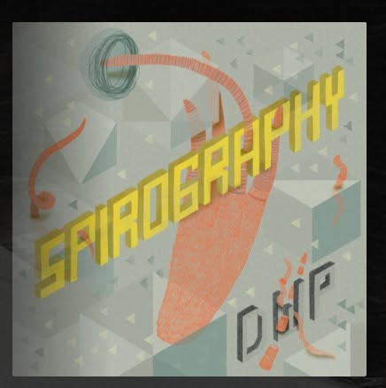

Spirography
[ Vinyl ]What’s behind
Spirography is a reflection of the time in which we constantly live in with the need to change many things to achieve goals we somehow need to. The songs are like stories about thoughts going thru our minds when our souls are on such a journey. Everything is relative, but so real and only possible can happen if we do something about it. The space between thoughts and real do is filled with feelings which makes us wonder about if it has it’s meaning and what if we do nothing what happens to us or the world we live in.
Creating and listening to songs is sound therapy and I hope that every one of us has believed in the joy we live which we want and like to share with anyone or at least someone who deserves to affect the meaning of life although so many things happening which can’t be changed or people don’t want to make the change.
I hope you will enjoy this sound journey with each not just the title of the songs, but mostly with the sounds that make an emotional impact.